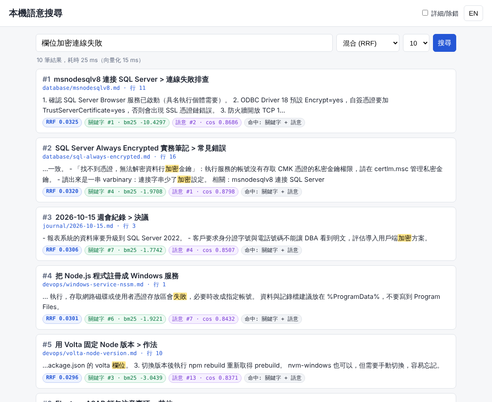
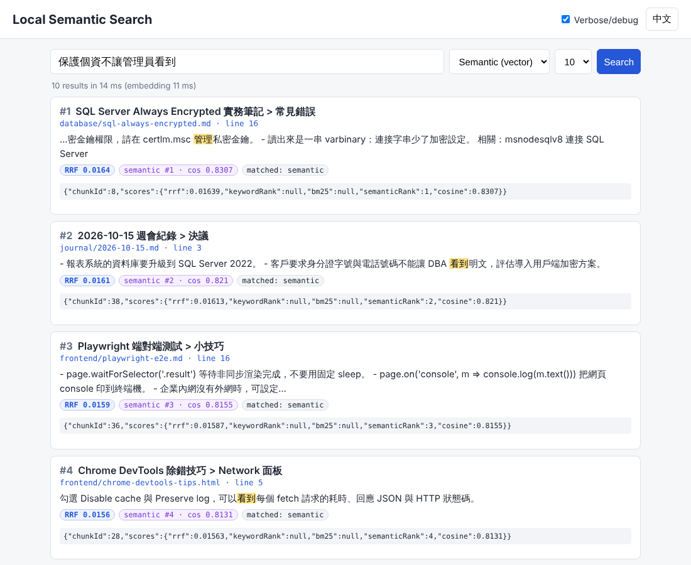

概觀 Overview
完全在本機執行（不呼叫任何雲端 API）的搜尋工具，對一個資料夾（例如 Obsidian vault）裡的繁體中文 / 英文 Markdown 與 HTML 文件建立索引，提供：
- 關鍵字搜尋：SQLite FTS5 + BM25；中文以「字元二元組（bigram）」斷詞，2 個字的詞（如「加密」）也查得到。
- 語意搜尋：
sqlite-vec向量表 + 本機 ONNX 模型multilingual-e5-small（int8，透過@huggingface/transformers在 CPU 執行）。 - 混合排序：Reciprocal Rank Fusion（RRF, k=60）融合兩邊名次，結果顯示分數明細。
- 增量索引：以 mtime/size 快速判斷，再以 SHA-256 確認內容；刪除的檔案會自動移除。提供
--dry-run預覽。 - 介面：CLI（
index/search/serve/stats）與本機 Web UI（繁中 / English 切換、片段高亮、來源路徑、分數明細、除錯模式）。
transformers:Xenova/multilingual-e5-small:q8（真實模型，384 維）。離線備援 hash 嵌入器也由 npm test 端對端驗證。檔案結構
02-local-semantic-search/
├─ src/
│ ├─ cli.js CLI 進入點 (index | search | serve | stats)
│ ├─ config.js 路徑與設定（OS 感知預設位置、環境變數覆寫）
│ ├─ logger.js JSONL 結構化記錄（等級、檔案、ring buffer）
│ ├─ parse.js Markdown / HTML 解析與依標題切塊
│ ├─ tokenize.js 中文 bigram 斷詞、FTS 查詢式、片段高亮
│ ├─ embedder.js 可抽換 Embedder：e5（transformers.js）/ hash（離線備援）
│ ├─ db.js SQLite schema（files, chunks, FTS5, vec0）
│ ├─ indexer.js 掃描、預覽、增量索引
│ ├─ search.js BM25 + KNN + RRF
│ └─ server.js node:http 本機伺服器與 /api/*
├─ public/ Web UI（index.html, app.js, style.css；無建置步驟）
├─ scripts/ fetch-model.js, demo-queries.js, verify-ui.js (Playwright)
├─ test/ node:test 自動測試（npm test）
├─ sample-docs/ 示範語料（17 篇 zh-TW / English，含 2 篇 HTML）
├─ examples/ 實測輸出與截圖
├─ lss.bat / serve.bat / index.bat → lss.ps1 → node
└─ README.html（本文件）/ README.md快速開始 Quick start
Windows（繁中）
- 安裝 Node 22（建議 Volta：
winget install Volta.Volta，本專案package.json已volta固定 Node 22）。 - 在專案資料夾執行
npm ci（會下載 better-sqlite3 / sqlite-vec / onnxruntime-node 的 Windows prebuild）。 - 下載模型：
npm run fetch-model（約 135 MB；詳見 模型）。 - 雙擊
index.bat：先顯示 dry-run 預覽，按 Y 才寫入索引。 - 雙擊
serve.bat，瀏覽器開http://127.0.0.1:8787/。
索引自己的筆記：lss.bat index --dir "D:\Obsidian\MyVault"，之後 lss.bat search 欄位加密連線失敗。
Linux / macOS
npm ci
npm run fetch-model # 或 npm run fetch-model:npm（huggingface.co 被擋時）
npm run index:preview # dry-run，不寫入
npm run index
npm run search -- 欄位加密連線失敗
npm run serve # http://127.0.0.1:8787/沒有模型也能先試：node src/cli.js index --embedder hash（離線備援，語意能力弱，見 限制）。
模型 Model
預設模型：Xenova/multilingual-e5-small（由 intfloat/multilingual-e5-small 轉成 ONNX，MIT 授權），使用 int8 量化檔 onnx/model_quantized.onnx，384 維，最多 512 tokens。查詢與段落分別加上 query: / passage: 前綴（e5 的訓練格式）。
模型檔放在 models/Xenova/multilingual-e5-small/（.gitignore 已排除，不要提交）。執行時設定 env.allowRemoteModels = false，完全離線。
| 方式 | 指令 | 說明 |
|---|---|---|
| Hugging Face（預設） | npm run fetch-model | 從 https://huggingface.co/Xenova/multilingual-e5-small/resolve/main/ 下載 5 個檔案。可設 HF_ENDPOINT=https://hf-mirror.com 改用鏡像。本容器 huggingface.co 被封鎖，此路徑未在此實測。 |
| npm registry | npm run fetch-model:npm | 以 npm pack dsh-plugin-discover-model@0.1.0 下載（第三方 MIT 套件，內含相同 Xenova 檔案；不執行任何安裝腳本），解壓後複製。本環境實際使用此路徑。 |
| 手動 | — | 將 config.json, tokenizer.json, tokenizer_config.json, special_tokens_map.json 放到 models/Xenova/multilingual-e5-small/，model_quantized.onnx 放到其下 onnx/。 |
| 執行時線上下載 | --allow-remote 或 LSS_ALLOW_REMOTE=1 | 讓 transformers.js 自行下載並快取到 models/.cache。 |
檢查：node scripts/fetch-model.js --check（比對釘選的 SHA-256；model_quantized.onnx = f80102d3…c193, 118,308,185 bytes）。
Embedder 介面（可抽換）
interface Embedder {
id: string; // 寫入 DB meta；更換時需 --rebuild
dim: number;
init(): Promise<void>;
embedPassages(texts: string[]): Promise<Float32Array[]>;
embedQuery(text: string): Promise<Float32Array>;
}e5：TransformersEmbedder（預設）。換其他 transformers.js 相容模型時，可用createEmbedder('transformers:<org/model>:q8')擴充。hash：HashEmbedder，字元 1–3 gram / 英文字詞的 feature hashing（256 維）。不需任何模型檔，但只能捕捉字面重疊，不是真正的語意。
CLI 用法
node src/cli.js index [--dir <folder>] [--dry-run] [--rebuild] [--embedder e5|hash]
node src/cli.js search <query> [--mode hybrid|keyword|semantic] [--k 10] [--per-file 1] [--json]
node src/cli.js serve [--port 8787] [--host 127.0.0.1]
node src/cli.js stats
共用：--data-dir <dir> --model-dir <dir> --allow-remote --debug| 選項 / 環境變數 | 說明 |
|---|---|
--dir / LSS_DOCS_DIR | 要索引的資料夾（預設 sample-docs/）。支援 .md .markdown .html .htm；略過 .obsidian .git node_modules 及以 . 開頭的資料夾。 |
--dry-run | 只列出 new / changed / unchanged / deleted，不建立也不修改 DB。 |
--rebuild | 清空後重建（更換 embedder 時必須）。換資料夾會自動重建並記錄 warn。 |
--per-file | 每個檔案最多回傳幾個區塊（預設 1；0 = 不限）。 |
--json | 輸出完整 JSON（含 debug 計時與 FTS 查詢式）。 |
--data-dir / LSS_DATA_DIR | DB 與 logs 位置。預設：Windows %ProgramData%\NewMiscCode\02-local-semantic-search；其他 OS 為專案下 ./data。LSS_DB、LSS_LOG_DIR 可個別覆寫。 |
--model-dir / LSS_MODEL_DIR | 模型根目錄（預設 ./models）。 |
LSS_PORT, LSS_HOST | Web 伺服器埠號 / 綁定位址（預設 127.0.0.1:8787，只接受本機連線）。 |
其他 npm scripts：npm run demo（固定查詢比較三種模式）、npm run verify:ui（Playwright 驗證 + 截圖）、npm test、npm run audit（文字檔編碼稽核）。
Web UI
- 搜尋框、模式（混合 / 關鍵字 / 語意）、筆數；結果顯示標題路徑（heading path）、來源檔案與行號、
<mark>高亮片段、分數徽章：RRF、關鍵字名次 + bm25、語意名次 + cosine、命中來源。 - 右上角 EN / 中文 切換（i18n 表在
public/app.js的I18N；選擇存在 localStorage，失敗時自動忽略）。 - 詳細/除錯 勾選後：每筆結果顯示原始分數 JSON、下方顯示該次查詢的計時（FTS / 向量 / 嵌入）與 FTS 查詢式，並連結
/api/debug。 - URL 可重現狀態：
/?q=欄位加密&mode=semantic&k=5&lang=en&debug=1。 - DevTools Console 可用
lss.search('...')、lss.last查看最後回應。
| API | 說明 |
|---|---|
GET /api/search?q=&mode=&k=&perFile= | 搜尋結果 + debug（計時、候選數、FTS 查詢式） |
GET /api/stats | 檔案 / 區塊 / 向量數、embedder、最後索引時間 |
GET /api/preview | dry-run 索引計畫（不寫入） |
GET /api/debug?n=100 | 設定、統計、記憶體、最近 n 筆 JSONL 記錄（ring buffer） |

設計 Design
切塊 Chunking
Markdown：去除 YAML front matter、轉換 [[wikilink|別名]] 與連結語法，依 ATX 標題（忽略 code fence 內的 #）切成段落，每段帶「標題路徑」（如 Always Encrypted 實務筆記 > 常見錯誤）。超過 450 字元的段落再依段落 / 句號切開並保留 60 字重疊。HTML：移除 script/style/head，把 h1–h6 轉成 Markdown 標題後走同一流程。嵌入文字 = 文件標題 + 標題路徑 + 內文。
中文關鍵字斷詞
FTS5 內建 trigram 無法查詢少於 3 個字的詞（實測「加密」查不到），unicode61 不切中文。jieba 類斷詞需要字典、對繁體較弱且多一個原生模組。本專案採用 Lucene CJKAnalyzer 的作法：CJK 字元二元組（「欄位加密」→ 欄位 / 位加 / 加密），英數字詞轉小寫，先做 NFKC（全形轉半形）。斷好的字串存入 unicode61 欄位，查詢時把 token 以 OR 組合交給 BM25 排序（欄位權重 title 3 : heading 2 : body 1）。
Schema
files(id, path UNIQUE, title, mtime_ms, size, sha256, indexed_at)
chunks(id, file_id → files ON DELETE CASCADE, ord, heading, text, line)
chunks_fts USING fts5(title, heading, body, tokenize='unicode61') -- rowid = chunks.id
chunks_vec USING vec0(embedding float[384] distance_metric=cosine) -- rowid = chunks.id
meta(key, value) -- embedder_id, embedder_dim, chunker_version, docs_root, last_indexed_at混合排序 RRF
兩邊各取前 50 名候選：rrf(d) = Σ w / (60 + rank_i(d))，平手時以 cosine、再以 bm25 決定。分數解讀：bm25 越小（越負）越好；cosine = 1 − cosine distance，越大越好（e5 的分數集中在 0.75–0.9，請看名次而非絕對值）。
非同步
檔案掃描 / 讀取、模型推論、HTTP 處理皆為 async。better-sqlite3 本身是同步 API（每個檔案一個 transaction，耗時毫秒級），是刻意的選擇：比 async 包裝更快更簡單。
除錯 Debug / Trace
- JSONL 記錄：
<data-dir>/logs/lss-YYYYMMDD.jsonl，每行{ts, level, pid, event, ...}。等級：trace / debug / info / warn / error。預設檔案記錄 info 以上、終端機（stderr）只顯示 warn 以上。 --debug（或LSS_DEBUG=1）：檔案與終端機都記錄 debug（包含每批嵌入耗時、每個 HTTP 請求）。LSS_LOG_LEVEL=info可只調整終端機等級。- Web：UI 勾選「詳細/除錯」或網址加
?debug=1；/api/debug回傳設定與最近記錄。伺服器只用node:http，沒有 CSP / 反除錯設定，Chrome DevTools（F12）的 Network、Sources（app.js未壓縮）、Console 都可直接使用。 - Node 除錯：
node --inspect src/cli.js serve --debug（或npm run serve:inspect），Chrome 開chrome://inspect→ Open dedicated DevTools for Node。索引除錯：node --inspect-brk src/cli.js index --debug。透過 .bat 啟動時可先set NODE_OPTIONS=--inspect。 - 查最近錯誤（PowerShell）：
Get-Content $env:ProgramData\NewMiscCode\02-local-semantic-search\logs\*.jsonl | ConvertFrom-Json | ? level -eq 'error'
Windows 注意事項
- 固定 Node 版本：better-sqlite3、sqlite-vec、onnxruntime-node 都是原生模組，綁定 Node ABI。請用 Volta（
volta pin node@22，已寫入 package.json）。換 Node 版本後若出現NODE_MODULE_VERSION錯誤，執行npm rebuild（或刪除 node_modules 後npm ci）。 - 資料位置：預設
%ProgramData%\NewMiscCode\02-local-semantic-search\index.sqlite與logs\。一般使用者對 ProgramData 子資料夾預設可建立；若權限不足，用--data-dir或LSS_DATA_DIR指向其他位置。 - 啟動器：
lss.bat（任意參數）、serve.bat、index.bat（先預覽再確認）。.bat為純 ASCII + CRLF，會pushd "%~dp0"、顯示路徑與結束代碼並pause；實際邏輯在lss.ps1（UTF-8 with BOM，因為含中文訊息；Windows PowerShell 5.1 才能正確讀取）。 - 終端機中文：
lss.ps1會設定[Console]::OutputEncoding = UTF8。直接在 cmd 執行 node 若中文亂碼，先chcp 65001。 node_modules約 770 MB（onnxruntime-node 含多平台二進位檔、transformers.js 相依的 sharp 等）。- 首次載入模型約 1–2 秒；伺服器載入模型後 RSS 約 570 MB（本環境實測）；
serve啟動時會在背景預熱模型。
驗證步驟（同事可重現）
- 安裝：
node -v應為 v22.x →npm ci無錯誤。 - 原生模組：
node -e "const D=require('better-sqlite3');const v=require('sqlite-vec');const d=new D(':memory:');v.load(d);console.log(d.prepare('select vec_version() v').get())"→ 印出{ v: 'v0.1.9' }。 - 模型：
npm run fetch-model（或fetch-model:npm）→ 最後顯示 5 行OK與Model ready。 - 預覽：
npm run index:preview→ 列出 17 個new，最後一行(nothing written)，且 data 資料夾沒有產生index.sqlite。 - 索引：
npm run index→added=17 … total(files=17, chunks=39, vectors=39)。 - 增量：再執行一次
npm run index→unchanged=17 newChunks=0，數十毫秒完成（不載入模型）。修改任一 .md 再執行 →updated=1。 - 搜尋：
node src/cli.js search 欄位加密連線失敗 --mode semantic --k 3→ 第 1 名database/sql-always-encrypted.md（該筆記沒有「欄位」「連線」「失敗」這些字）。node src/cli.js search 保護個資不讓管理員看到 --mode keyword --k 3→ 第 1 名是不相關的 DevTools 筆記；改--mode semantic→ 第 1 名是 Always Encrypted。npm run demo→ 與examples/demo-queries.txt比對。
- Web：
npm run serve，開http://127.0.0.1:8787/，搜尋「欄位加密連線失敗」→ 有高亮片段與分數徽章；按 EN 切換語言；勾選「詳細/除錯」→ 出現計時 JSON；開/api/debug看到recentLogs。 - 自動測試：
npm test→pass 10, fail 0（模型不存在時 e5 測試會 skip）。 - UI 自動驗證（選用）：需要 Playwright（
npm i -D playwright && npx playwright install chromium），npm run verify:ui→ 8 行PASS並更新examples/*.png。 - 編碼稽核：
npm run audit→problems=0。 - 記錄：檢查
<data-dir>/logs/lss-*.jsonl每行皆為合法 JSON。
實測結果（本環境，Linux x64，Node 22.23.4）
完整輸出：examples/demo-queries.txt、examples/cli-session.txt。各模式前 3 名（每檔一筆）：
| 查詢 | keyword（BM25） | semantic（e5） | hybrid（RRF） |
|---|---|---|---|
| 欄位加密連線失敗 | 1 msnodesqlv8 · 2 volta-node-version · 3 sql-always-encrypted | 1 sql-always-encrypted · 2 msnodesqlv8 · 3 週會 2026-10-15 | 1 msnodesqlv8 · 2 sql-always-encrypted · 3 週會 |
| 保護個資不讓管理員看到 | 1 chrome-devtools-tips ✗ · 2 sql-always-encrypted | 1 sql-always-encrypted · 2 週會（客戶要求 DBA 看不到明文） | 1 sql-always-encrypted · 2 chrome-devtools-tips |
| 桌面程式打包後讀不到 C++ 擴充 | 1 electron-asar | 1 electron-asar | 1 electron-asar |
| 批次檔中文變成亂碼 | 1 powershell-encoding | 1 powershell-encoding | 1 powershell-encoding |
| UI hangs when waiting for a task | 1 csharp-async | 1 csharp-async | 1 csharp-async |
| server runs out of ports under load | 1 httpclient-socket-exhaustion | 1 httpclient-socket-exhaustion | 1 httpclient-socket-exhaustion |
效能：17 檔 / 39 區塊首次索引約 2.9 秒（含模型載入約 1.4 秒）；無變更重跑約 20 ms；伺服器暖機後單次查詢約 10–25 ms（其中嵌入約 10–20 ms）。

限制 Limitations
- 語意品質：multilingual-e5-small（int8）體積小、速度快，但語意能力有限；跨語言查詢（英文問、中文筆記答）在本語料上表現普通，cosine 值彼此很接近。需要更好品質可換
Xenova/multilingual-e5-base或 bge-m3：除了取得 ONNX 檔並--rebuild，還要修改程式中的維度與前綴，步驟見 開發者指南 → 更換嵌入模型。 - Hugging Face 下載路徑未在本環境實測（huggingface.co 被封鎖）；實際使用 npm registry 上內容相同（SHA-256 釘選）的第三方套件取得模型。
- Bigram 關鍵字：會有雜訊命中（例如「看到」命中 DevTools 筆記），召回率高但精確度一般；沒有同義詞與繁簡轉換。
- hash 備援嵌入器只是字面相似度，不是語意；只建議在沒有模型時使用。
- HTML 解析以正規表示式實作，足以處理筆記 / 匯出頁面，不是完整的 HTML parser。只支援 UTF-8 檔案。
- Windows 的
.bat/.ps1與%ProgramData%路徑在本 Linux 環境無法實際執行，僅經過靜態檢查（ASCII / BOM / CRLF）。 - 單一 DB 對應單一資料夾與單一 embedder；切換時會重建。
開發者指南（接手必讀）
資料流程
索引 index
scanFolder() 遞迴掃描 .md/.markdown/.html/.htm（略過 .git .obsidian .trash node_modules 與 . 開頭資料夾）
planChanges() 與 files 表比對 mtime/size → new / changed / unchanged / deleted
（changed 再比 SHA-256，內容相同只更新 mtime，不重算向量）
parseDocument() 去 front matter / wikilink → 依標題切塊 → 超過 450 字再切（重疊 60 字）
embedPassages() "passage: " + 文件標題 + 標題路徑 + 內文 → 384 維 Float32Array（批次 16）
單一 transaction 寫入 chunks、chunks_fts（toFtsText 斷詞後）、chunks_vec
查詢 search
keyword() toFtsQuery() → FTS5 MATCH，bm25(title 3, heading 2, body 1)，取前 50
semantic() embedQuery("query: " + 問題) → vec0 KNN（cosine），取前 50
RRF rrf = Σ w / (60 + rank)；每檔最多 perFile 筆；附 debug 計時
模組職責
| 檔案 | 職責 | 修改時注意 |
|---|---|---|
src/config.js | 所有路徑與預設值（OS 感知）、環境變數；CHUNKER_VERSION、SUPPORTED_EXT、SKIP_DIRS | 改切塊邏輯時要把 CHUNKER_VERSION 改成新值，舊索引會自動重建 |
src/parse.js | Markdown / HTML 解析與切塊 | HTML 以正規表示式處理，不是完整 parser |
src/tokenize.js | CJK bigram 斷詞、FTS 查詢式、片段與高亮 | 索引與查詢必須用同一套斷詞；改了要 --rebuild |
src/embedder.js | TransformersEmbedder（e5）、HashEmbedder（備援）、createEmbedder() 工廠 | embedder 的 id 寫入 DB meta，不一致時拒絕寫入 |
src/db.js | 開 DB、載入 sqlite-vec、建立 schema、統計 | better-sqlite3 為同步 API（刻意的選擇） |
src/indexer.js | 預覽（dry-run）與增量索引 | dry-run 不得建立或修改 DB（有測試保護） |
src/search.js | Searcher：keyword / semantic / hybrid 與 RRF | 候選數、權重可由參數 candidates、wKeyword、wSemantic 調整 |
src/server.js | node:http 靜態檔與 /api/* | 預設只綁 127.0.0.1 |
public/app.js | Web UI 與 I18N 字串表 | 新字串 zh-TW 與 en 都要加 |
更換嵌入模型（注意：不只是 --rebuild）
TransformersEmbedder 目前把維度寫死為 this.dim = 384，查詢與段落前綴 query: / passage: 也是 e5 系列專用。換模型時必須：
- 取得 transformers.js 相容的 ONNX 檔（含
tokenizer.json與onnx/model_quantized.onnx），放到models/<org>/<model>/。 - 修改
src/embedder.js：依模型設定dim（例：multilingual-e5-base = 768、bge-m3 = 1024）；非 e5 模型（如 bge-m3）要拿掉query:/passage:前綴。 - 以
--embedder transformers:<org>/<model>:q8 --rebuild重建索引（vec0 表會依新維度重建）。 - 跑
npm test與npm run demo，比對examples/demo-queries.txt的結果是否改善。
新增支援的檔案格式（例：.txt）
src/config.js：把副檔名加入SUPPORTED_EXT。src/parse.js的parseDocument()：依副檔名轉成 Markdown 風格文字後走同一套切塊流程。- 在
sample-docs/放一個範例、在test/core.test.js加解析測試，然後npm test。
對外介面約定
/api/search的查詢參數（q, mode, k, perFile）與回應欄位是 Web UI 與外部腳本共用的契約，新增欄位可以，改名或刪除請避免。- DB 位置與檔名（
<data-dir>/index.sqlite）、log 檔名（lss-YYYYMMDD.jsonl）維持不變，方便維運腳本。
相依套件版本
| 套件 | 版本 | 說明 |
|---|---|---|
@huggingface/transformers | ^4.3.2 | CPU 推論（onnxruntime-node） |
better-sqlite3 | ^13.0.3 | 原生模組，換 Node 版本要 npm rebuild |
sqlite-vec | ^0.1.9 | 原生擴充，提供 vec0 虛擬表 |
| Node.js | 22.23.4（Volta 鎖定），≥ 20 < 25 | — |
| 模型 | Xenova/multilingual-e5-small q8 | SHA-256 釘選於 scripts/fetch-model.js |
變更紀錄
| 版本 | 日期 | 內容 |
|---|---|---|
| 0.1.0 | 2026-11-05 | 首版：FTS5 bigram + sqlite-vec + e5-small、RRF、增量索引、Web UI、CLI；Linux 上 npm test 10/10、UI 驗證 8/8 通過。 |
English summary
Fully local hybrid search for Markdown/HTML notes (zh-TW friendly). Keyword side: SQLite FTS5 with BM25 over CJK character bigrams (so 2-character words match; FTS5 trigram cannot). Semantic side: sqlite-vec vec0 cosine KNN over 384-d embeddings from Xenova/multilingual-e5-small (int8 ONNX) run on CPU by @huggingface/transformers, with allowRemoteModels=false. Results are fused with Reciprocal Rank Fusion (k=60) and returned with a per-result score breakdown.
Quick start: npm ci → npm run fetch-model (or fetch-model:npm when huggingface.co is blocked) → npm run index:preview → npm run index → npm run search -- "query" / npm run serve. Debugging: --debug, JSONL logs in <data-dir>/logs, /api/debug, UI verbose mode, node --inspect src/cli.js serve. Verified here with the real e5 model (CLI, npm test, Playwright UI run); the Windows launchers and the Hugging Face download path were not executable in this Linux container.